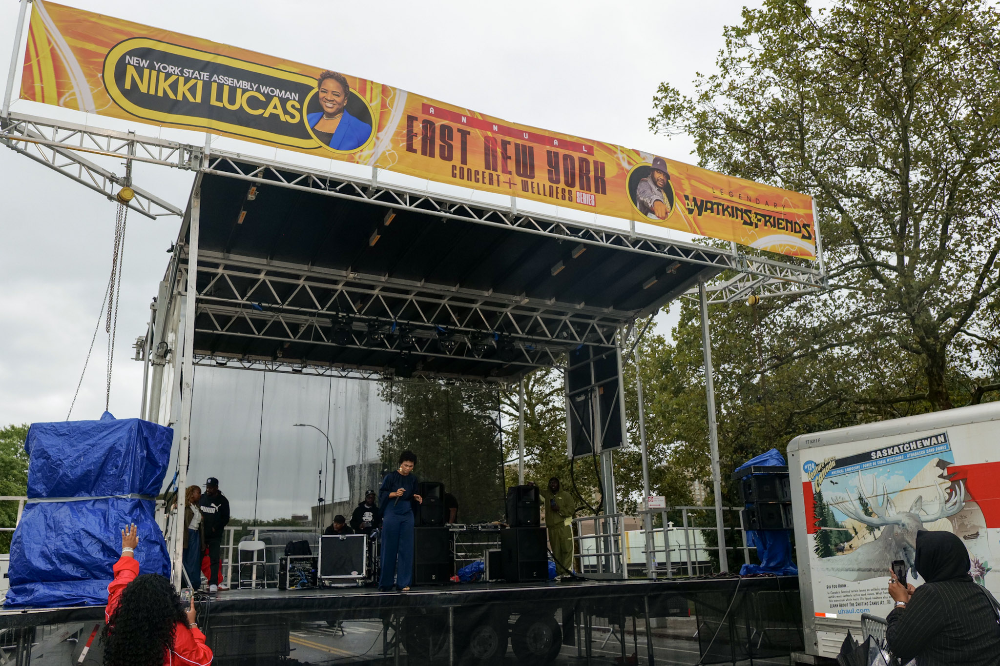
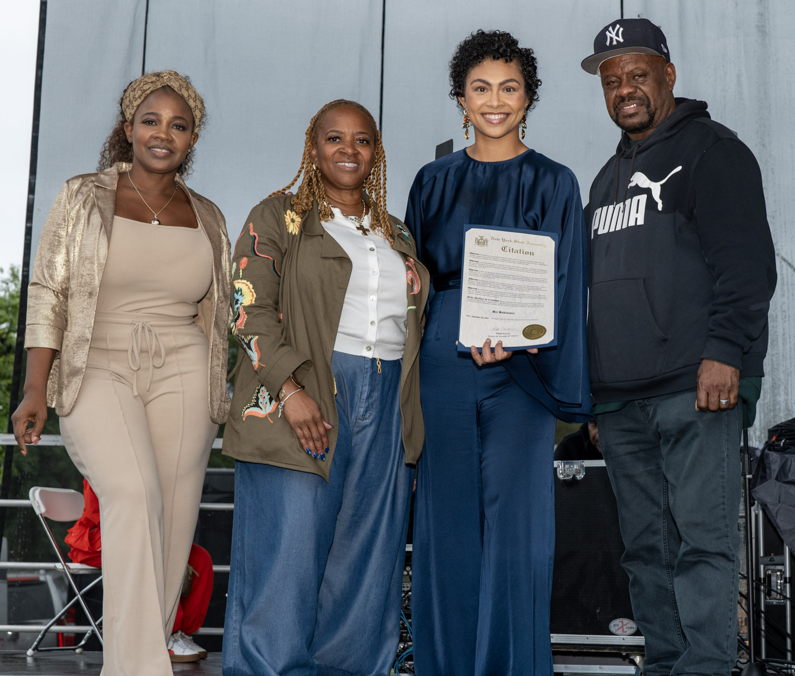

EAST NEW YORK, Brooklyn — Rain fell during the final afternoon of the East New York Concert + Wellness Series, as gospel performers prepared to take the stage and attendees remained on Van Siclen Avenue for the last day of the four-day event.
Assemblywoman Nikki Lucas thanked attendees who came out despite the weather.
“We came to worship, we came to praise,” Lucas told the crowd. “We want this community to be well because when you are well, you do better.”
The fourth annual East New York Concert + Wellness Series ran from Sept. 17 through Sept. 20. The free event featured Caribbean and Latin music, house music, hip-hop and R&B, gospel and jazz. It was presented by Lucas and DJ Keith Watkins.
Organizers also offered health screenings and connected attendees with community resources. Food vendors and local organizations participated throughout the event.
A vision that became a series
Watkins said the idea for the concert and wellness series came from a conversation he and Lucas had in a diner in 2016. He said the annual series itself began four years ago.
“We started this wellness concert, East New York Concert Wellness Series, me and Nikki four years ago,” Watkins said. “It was a vision that me and Nikki had. We sat in a diner ... in 2016, and we all made it happen.”
Watkins said the series focuses on mental health, unity and bringing people together.
“It’s about wellness, teaching mental health,” Watkins said. “It’s also about bringing the community together in unity and love.”
He said the series brings together people who currently live in East New York and people who once lived in the community.

Rain protection covers equipment at the stage for the gospel and jazz finale of the East New York Concert + Wellness Series on Sept. 20 in East New York. Photo: Deric Johnson / East New York Times
Screenings and wellness resources
Lucas said the event was designed to pair entertainment with health and wellness outreach. The series included blood pressure and diabetes screenings, she said, along with opportunities for attendees to connect with health, financial and mental-health providers.
Lucas said organizers wanted attendees to receive screenings rather than only receive printed information.
“We really don’t allow just for people to pass out papers here. We want to make sure that people are actually screening, because once they do that, now they get that callback. Now they can follow up with an actual health provider.”
Lucas said the series addresses spiritual, mental, physical and financial wellness.
“We wanted to create something and figure out a way that we can include helping people to get well, spiritual, mental, physical, financial as well,” Lucas said.
She said artists who have appeared during the series have spoken about personal experiences with mental-health challenges, cancer, heart conditions and a lack of health insurance.
“If we have to blend fun with taking care of yourself, we’re here to do it every single time,” Lucas said.
Assembly citations for gospel artists
On the final day of the series, Lucas presented New York State Assembly citations to gospel artist Bri Babineaux and The Walls Group, a contemporary gospel quartet from Houston.
“We like to give people their flowers while they’re here,” Lucas told the audience.
Lucas’s citation for Babineaux recognized her contributions to gospel and worship music. It cited her 2015 viral performance of “Make Me Over,” her recordings and collaborations, and her work blending contemporary gospel and R&B influences.
Babineaux told the audience that her viral video changed the course of her life after a difficult period when she had contemplated suicide.
Lucas also presented a citation to The Walls Group. The citation recognized the group’s work in contemporary gospel music, including national chart success, a Grammy nomination and its influence on younger audiences.

Assemblywoman Nikki Lucas joins gospel artist Bri Babineaux, holding a New York State Assembly citation, and DJ Keith Watkins during the final day of the East New York Concert + Wellness Series in East New York. Photo: Deric Johnson / East New York Times
Vendors and local support
Food trucks and vendors were part of the event. Lucas said the vendors participating in the series have supported the community throughout the year.
“Any food truck that’s on this block during our concert series, they’re here because they do so much throughout the community,” Lucas said. “Giving back, giving back, giving back.”
Lucas encouraged attendees to support the vendors.
“When you get free stuff, you gotta balance that out,” Lucas said. “We gotta be able to support people who support us as a community.”
Lucas named Fusion East, Mylah’s, East Coast Street Tacos and Virginia’s Catering among the vendors and partners. She also said restroom services at the event were provided by local Black-owned businesses.
Local media and community identity
During the event, Lucas recognized East New York Times and East New York News. She said local Black-owned media outlets are important because they cover neighborhood issues and help tell the community’s story.
“We want our narrative to be told by us so that it’s not distorted, it’s not constantly negative, and it’s a real representation of our people and our culture.”
Lucas said the series was intended to be inclusive and intergenerational. The event featured music ranging from Caribbean and Latin music to house, hip-hop, R&B, gospel and jazz.
“This is who we are. This is who East New York is,” Lucas said.
Watkins and Lucas said the series has operated for four years without an incident. Lucas also said attendance has grown, estimating that about 10,000 people attended the Saturday program. Those figures were provided by the organizers and were not independently verified.
About the reporting. Remarks from Assemblywoman Nikki Lucas and DJ Keith Watkins were recorded on site during the fourth annual East New York Concert + Wellness Series on Van Siclen Avenue, Sept. 17–20, 2026. Attendance figures and the series’ incident-free record were provided by the organizers and were not independently verified.
Sources
- Remarks and interviews recorded on site at the East New York Concert + Wellness Series by the East New York Times, Sept. 20, 2026.
- New York State Assembly citations presented to Bri Babineaux and The Walls Group, read on stage Sept. 20, 2026.
- New York State Assembly, 60th District — Nikki Lucas — nyassembly.gov/mem/Nikki-Lucas